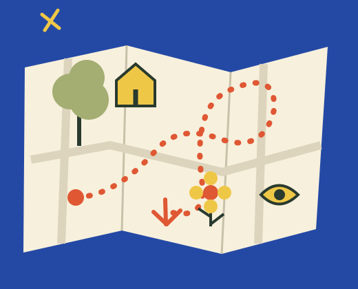
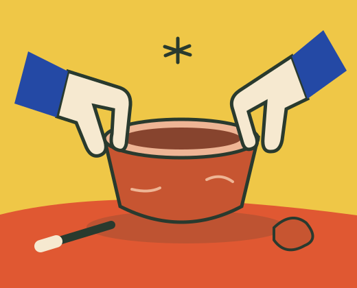

Making · Beginner
Clay basics
Slow down, pinch a shape, and get to know what a little clay can do.
14 & 21 November · 10:00
See the programmeA neighborhood learning studio
For curious adults. No experience needed.


 Small discoveries, made together.
Small discoveries, made together.01 / The November programme
Three approachable sessions. Each starts with the basics and leaves space for your own discoveries.
Making · Beginner
Slow down, pinch a shape, and get to know what a little clay can do.
14 & 21 November · 10:00
See the programmeExploring · All levels
Take an unhurried wander. Collect details, colors and questions along the way.
15 & 22 November · 09:30
See the programme03Making · Beginner
Turn a simple shape into a bold little print. Try a stencil, a roller and a new idea.
14 & 28 November · 14:00
See the programme02 / A different kind of afternoon
You don’t need a portfolio, a plan, or a particular kind of talent. Just a little curiosity and the willingness to try.
Common Ground is a fictional studio imagined around a simple idea: everyday learning can be playful, practical and shared. This little programme gives each activity enough time to feel like a change of pace.
Make something, or head out and notice something.
Compare the dates and the full cost for 1–4 people.
Save your choice in this browser and come back to it.
Your next small discovery
This is a fictional programme. Saving a local plan does not reserve a seat or take payment.
See how planning works